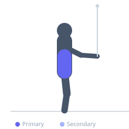
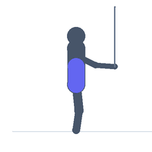

Exercise guide / High-to-Low Cable Woodchopper
High-to-Low Cable Woodchopper
The high-to-low cable woodchopper trains diagonal trunk rotation in a downward arc, emphasizing the external oblique on the pulling side and the contralateral internal oblique. The diagonal movement pattern closely replicates the biomechanics of a downward striking action used in chopping, overhead throwing follow-through, and many racquet-sport movements. The continuous cable tension challenges both the rotational prime movers and the hip stabilizers throughout a large three-dimensional arc.
Primary muscles
external oblique
internal oblique
Secondary muscles
transverse abdominis
erector spinae
Stabilizers
gluteus maximus
gluteus medius
Equipment
Cable Machine (High Pulley)


Starting position
- Set the cable pulley to its highest position. Stand side-on to the machine, grasping the handle with both hands above and outside the shoulder closest to the stack.
Setup
- Attach a rope or single handle to the high pulley. Stand far enough away that the cable is loaded at the start.
Steps
- Step 1: Begin with arms extended upward toward the cable, torso rotated toward the stack.
- Step 2: Pull the handle diagonally downward and across the body in a chopping arc, rotating the torso away from the cable.
- Step 3: Finish with the handle outside the far hip, knees slightly bent and weight shifted.
- Step 4: Resist the cable and return in a controlled arc to the start position.
- Step 5: Complete all reps then switch sides.
Coaching cues
- Imagine swinging an axe — the power comes from the whole trunk
- Keep the arms long
Breathing
- Exhale forcefully on the downward chop. Inhale on the controlled return upward.
Range of motion
- Full diagonal arc from high outside one shoulder to low outside the opposite hip.
Tempo
- 2-0-2-0. Powerful pull, controlled return.
Common mistakes
- Bending the elbows — the movement should originate from the trunk, not the arms
- Squatting down instead of rotating — the squat component should be minimal
Safety
- Keep the spine neutral throughout — avoid lateral spinal flexion
Training
- strength: 10–15 reps
- strength: 3–4 sets
- Rest: {'strength': 60}